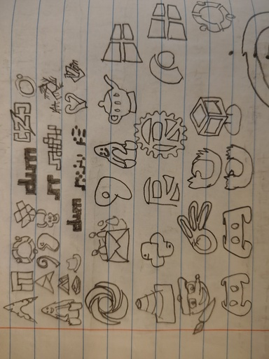
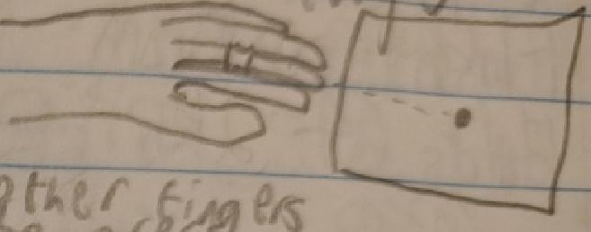
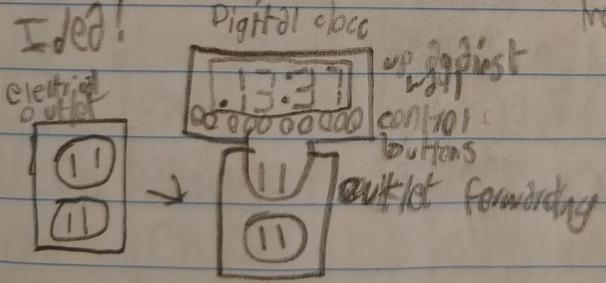
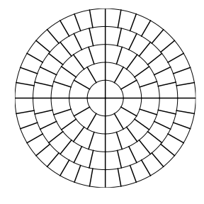
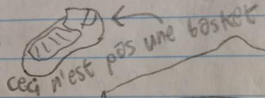
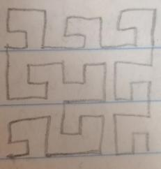
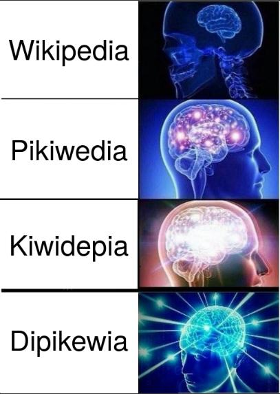

From 2019 thru 2021, as a teenager, I wrote in a notebook. Much of the content was technical. I titled it "Chaotic Ideas".
As we can expect from the title and context, much of it was rubbish, or meaningless out of context. Some of it, less so, and I present that here in order of where it was written in the book.
I tried to draw a bunch of software logos. They may have been done from memory, or with reference to the original, but limited by my poor drawing skills in those days.

Top-to-bottom, left-to-right: Arch Linux, Manjaro, Ubuntu, BusyBox (?), dwm (suckless), Zig, Lua; Tux (Linux), Artix Linux, Debian, Gentoo Linux, GNU, st (suckless), sxiv (suckless-adjacent), NixOS (?); Alpine Linux, Red Hat, dwm (suckless), sxiv (restyled), unrecognisable, Guix (?), Vim; Replit (pre-2022), Eudora email client (?), Gentoo Linux (again), Tux (again), Geany, Windows; VLC, Python, Rust (2x), Replit (again, fragment), Windows (again); GIMP (?), Blender, Firefox (2x), VirtualBox (pre-2024), Ubuntu (again), Discord (2x).
perhaps [strcmp timing vulnerabilities] could be mitigated while having fast code by starting byte-by-byte comparisons at a RANDOMLY SELECTED point in the string
This wouldn't work so well in normal C, because to pick a valid starting point, you'd need to know the length of the string.
But it seems effective if you know the lengths of the strings in advance (no separate call to strlen).
Mouse/trackball alternative that wraps around middle finger, and uses pointing for cursor movement, and other fingers to press buttons/wheel on sides

"Pointing for cursor movement" is the hard part. What do we do for that? Coloured marker and a webcam? Light sensor in the screen? Highly clever accelerometers?
What if we embedded a clock (or other trivial appliance) in an extension cord? What if the "cord" was really short and rigid?


On 2020-09-30, I estimated what my Linux laptop configuration might look like. This was probably before I had tried Linux in VMs, let alone on bare hardware.
Apps depicted in the grid, top-to-bottom, left-to-right (✓ = actually used now, ✗ = abandoned in practice): Anki (✓), Blender (✓), GNOME Cheese (✗), Flatpak (✗), Geany (✗, Neovim instead), GIMP (✗, ImageMagick/Flameshot), Hyperbolica (✗), Inkscape (✗); IntelliJ IDEA (✗), LaTeX (✗, command-line Typst), LibreOffice Calc (✗, Gnumeric), LibreOffice Impress (✗); mpv (✓), Nautilus (✗, fish), NetSurf (✗, Lynx), OBS Studio (✗, ffmpeg), OpenShot Video Editor (✗, ffmpeg); Terminal (✓, but foot, not GNOME), Oracle VirtualBox (✗).
numbers from pure associative arrays: 0 = {}, 1 = {{}:{}}, 2 = {0:1}, 3 = {1:0}, 4 = {1:0, 0:0}, 5 = {1:0, 0:1}, 0s10 = {1:1}, 0s11 = {1:1, 0:0}, 0s12 = {1:1, 0:1}, 0s13 = {0:2}
That is, we can make a total ordering on the set of recursively-constructed dictionaries, and from that a bijection to the natural numbers. This looks to be inspired by the von Neumann representation of ordinals. The 0sN notation indicates seximal, with which I was quite enamoured at the time, by analogy to 0xN for hexadecimal.
group an image into the largest possible contiguous regions of acceptably similar colour, then quantise the image by replacing each group of pixels with copies of a single representative colour
This feels reminiscent of the techniques in vkcz's quadtree_img.
From what I skimmed of the source code, I didn't recognise this particular method.
algorithmically quantify the difference between pairs of images, using this information to dynamically set the framerate of a video so as to make the image-difference between adjacent frames below a threshold
I think this means we'd need a way to interpolate finer-grained frames.
A prime number multiplied by an odd number will never be between two adjacent twin primes (except in trivial cases like 3)
There's much mathematically-immature folly to laugh at here. But, for a real proof:
I don't know how to prove it from here. But the conjecture still holds well beyond what past-me would've checked.
echo '...' | python -c 'list(print((int(n) + 1) // 2) for n in input().split(", "))' | factor
fn rsh(x: u8) -> u8 {
let mut r = 0;
let mut t = 1;
let mut n = 2;
while n != 0 {
if x & n != 0 {
r |= t;
}
t = n;
n = n.wrapping_add(n);
}
r
}
That's a one-bit right-shift in Rust without using the native instruction. Yliluoma 2014 has the same idea, in a more comprehensive list.

The above was crudely drawn by hand in the notebook. I replicated it today with Python:
import math
from matplotlib import pyplot as plt
rad: int = 5
fig, ax = plt.subplots()
fig.tight_layout()
fig.set_size_inches(4.0, 4.0)
ax.set_axis_off()
ax.axis((-rad, rad, -rad, rad))
for layer in range(rad):
ax.add_patch(plt.Circle((0, 0), layer + 1, fill=False))
steps: int = 4 * (2 * layer + 1)
for step in range(steps):
angle: float = math.tau * step / steps
ax.plot(
(layer * math.cos(angle), (layer + 1) * math.cos(angle)),
(layer * math.sin(angle), (layer + 1) * math.sin(angle)),
color="black",
)
fig.savefig("arcgrid.svg")
It might not look like it, but according to my calculations, each arc-section has the same area.
const MAX_DENOM: i32 = 100;
const TARGET: f64 = std::f64::consts::PI;
fn main() {
let mut cur = 1.0;
for denom in 0..MAX_DENOM {
let p = (denom as f64 * TARGET).round()
/ (denom as f64);
if (p - TARGET).abs() <
(cur - TARGET).abs() {
println!("{}/{} ({})",
(denom as f64 * TARGET).round(),
denom,
p);
cur = p;
}
}
}
That Rust code works verbatim to find rational approximations to an irrational number. It would be more efficient to descend the Farey sequence.
TRUST - Time-Revoked Update Sequence Transmission (2021-05-29)
- three types of participants: writers, servers, and readers
- writers compose and send updates
- each writer has a digital signature keypair
- updates are of the form SIG DTS LDN GDN CHN MSG
- SIG is the writer's digital signature for the rest of the update
- DTS is a timestamp to indicate when the update was originally created
- LDN and GDN are used by readers for verification, as described later (they are time quantities)
- CHN is a "channel" identifier, as described later
- MSG is arbitrary data; it is the content of the update
- writers must, after publishing an update to some channel, publish another updated to the same channel between DTS + LDN and DTS + GDN
- servers listen for and store updates published from authors [writers?]
- servers may also receive updates from other servers; this decentralisation is the main point of the protocol
- readers request updates for a given channel and public key (writer) from a server
- readers verify signatures on updates to protect against "forgery"
- readers check if the server's data is up-to-date by comparing the current time (DTC) with the times specified in the most recent update on the channel:
- DTC < DTS: writer violated protocol [claimed to time-travel]
- DTS < DTC < DTS + LDN: up-to-date
- DTS + LDN < DTC < DTS + GDN: may or may not be up-to-date
- DTS + GDN < DTC: definitely out-of-date
Unlike simpler and more common protocols, servers can't lie about when a writer posts updates.
![drawn "laptop" spread open, complete with hinges and a slanted "ThonkPad" logo accompanied by a distorted thinking emoji, with a screen showing a tiled layout as enabled by dwm, the top bar reading "st | davidk@hostname | 6m 3s 4u | 2021-05-25T08.59", while the left and largest window shows roff source code for a document discussing merge sort, the upper right window shows a zoomed-in render of that document, the middle right window shows bash executing "ls | grep '\.lzo$' | xargs -n 1 lazopsi", and the lower right shows an IRC client, likely irssi, for the "LiberaNode" channel "##lang-dev", all above a keyboard with home row ASHTGYNEOI](alpine.jpg)
Still about a year before I fully used Linux, I had anticipated my eventual Alpine Linux setup quite accurately:
The keyboard is shown in the Workman layout, which I used for a year or two (starting 2021-04-20) before I settled on Dvorak. What could "lazop" possibly refer to, you ask?
2021-05-22: Design principles of the previously-introduced [but on a later page] operator-oriented programming language ...Various design notes:
- syntactic uniformity through focus on operators/operations
- powerful type system
- self-consistent omnipresent object system [an unconventional jumble of buzzwords whose meaning is now lost on me]
- partially lazy evaluation
- code can be data
- everything is an expression
... Whilst syntactic regularity is cool, when taken to the extreme (as in LisP), it can be horrendously detrimental to usability. As such, I'm starting to design an ultra-high-level operator-oriented programming language. Speculative sample below:
- temporary name of language: "lazop" [lazy operators]
- all expressions (the whole program is one) are one of:
- simple literal
- parenthesised subexpr.
- curly-bracket-enclosed code block
- square-bracket-enclosed, comma-separated list constructor
- subexpr-operator-subexpr
- each expression is evaluated with a target return type; if the expression cannot be evaluated in a way that would return that type, there is an error
- available operators (non-exhaustive):
! $ % & * + - . / : ; < = > ? @ ^ | ~ << >> && || == >= <= != ** +- */ += -= /= &= |= <<= >>=- primitive types (nonexhaustive):
UInt8 Int32 Float64 Ident String CodeBlock Null Bool Reader Writer BigInt- generic/compound types (non-exhaustive):
LValue(T) Object(T) Pair(T, U) List(T) Function(P, R) HashMap(K, V)factorial = function@((n:Int32):Int32:{ (n<=1)?({1}:{(factorial@(n-1))*n}) }); stdout@"What ... is your name?"; name:String = stdin@_; (name == "Steve")?{ factorial@10 # Steve gets to know 10! }:{ stdout@"Begone!" }
I never implemented Lazop as described. The train of thought did inspire the very real, twice-implemented Skim language. I remain tempted to implement more operator-oriented language(s), tho my more recent designs are less recklessly ambitious.
2021-05-20: a social media/user-generated-content platform which improves upon the user-upvote system by automatically assigning users together (invisibly) as "friends" based on voting similarity and showing post scores to users adjustedly [sic] based on the "friendships" between the voters and the viewers
That is, the platform would cluster users by their observed taste in posts, and rank posts for each user in a way calibrated to their taste. I suspect contemporary "algorithmic" social media achieves similar effects, but I would've intended an approach more transparently formulaic:
[users A, B, C, D raw votes on posts a, b, c, d, e, f][users' friendship coefficients to each other user]
a b c d e f A + + 0 - + 0 B 0 + 0 0 + + C - 0 - + + 0 D + + + + + + [users' perceived ratings: dot products of raw votes and friendships]
A B C D A x +2 -1 +2 B +2 x +1 +3 C -1 +1 x 0 D +2 +3 0 X
A B C D a +3 +4 -1 +2 b +4 +5 0 +5 c +3 +2 0 0 d +1 +2 +1 -2 e +3 +6 0 +5 f +4 +3 +1 +3
browser extension or similar to find all username-like items on the page, so as to insert arbitrary-but-consistent autogenerated "profile pictures" to go with each user, for recognition of users beyond names
The standard term is "identicon", and there are programs like this, but not for usernames-in-general as I propose, as far as I know.
Around this point, several pages are filled to calculate square roots by hand to four decimal places. One must imagine the hapless fool unaware of the 21st century's ubiquitous calculators.

"This is not a sneaker", a snowclone of The Treachery of Images (Magritte, 1929).
Fundamentally acquired: bx, logb x, x - y
- 0 = x - x
- dep [dependent on] 1, 1 = b0
- dep 1, -x = 0 - x
- dep 3, x + y = x - (-y)
- dep 4, x·y = b(logb x + logb y)
- x / y = b(logb x - logb y)
- dep 5, xy = b(y · logb x)
- dep 1, 1 / x = b(0 - logb x)
The point here is that we can make any elementary function starting from just three binary operators. That's like a less impressive version of Odrzywolek 2026's EML, except that here, we need not assume any specific starting constants.
The sinusoid formula's pi over two Plus-minus pi-halves minus arc-sine Of (s minus v), over A, all sub p All over freq'ncy
This is the formula x = (π/2 ± (π/2 - arcsin((s - v) / A)) - p) / f, which solves (inverts) s = A sin(f x + p) + v, a sinusoid of specific amplitude A, frequency f / τ, phase p, and vertical offset v. The mnemonic follows a syllabically-rushed "Pop! Goes the Weasel" tune, closely inspired by such a mnemonic for the quadratic formula.
#include <stdio.h>
int main(int argc, char* argv[]) {
printf("P1\n%zu 7\n", strlen(argv[1]));
for (int row = -1; row < 6; row++) {
printf("0");
for (size_t ch = 0; ch < strlen(argv[1]); ch++) {
printf("%d", dotsies_pixel(argv[1][ch], row));
}
printf("0\n");
}
}
// [below is a shell session]
$ yv a src/myn.c # [handwritten typo?]
bash: yv: command not found
$ mv a src/main.c
$ gcc src/main.c -Wall
$ ./a.exe not # [program writes to stdout, should redirect to not.pbm]
$ magick convert not.pbm -scale 1000% not.png
$ exit
The above program should draw the string in argv[1] as a Dotsies Portable BitMap image.
It assumes a function int dotsies_pixel(char c, int row);, which one can write by inspection.
[a game] in which the player has to pick constants to insert into parametric functions which control the movement of some "entities", with the goal of getting the entities' paths to intersect in a manner facilitating the transport of an object from a given starting point to a given ending point; the object is carried by the entities as they move and can be "ejected" (and transferred to another nearby entity, if there is one) as programmed by the puzzle designer and the player
Only a pathological nerd would play that as-is. Better perhaps to restyle "entities" as some kind of virtual vehicles. "Pick constants" becomes "adjust routes that follow particular forms", and if two routes intersect, cargo passes from one vehicle to another.
R-I-S-C-hy-phen-V / R-E-S-P-E-C-T (song)
The ISA that's open/free Was made in Berkeley, with Patterson (RISC, RISC, RISC, RISC) Yeah, baby (RISC, RISC, RISC, RISC) SiFive's IPs (RISC-V, just a two-core chip) With Patterson, now (just a two-core chip)
R-I-S-C-hy-phen-V 64-bit, still it's free R-I-S-C-hy-phen-V Fits in an SoC
The process of FCCS [Fungibilising Cryptographic Cloud Storage] begins with a custom bootloader, which requests a username and "master password", which are used, respectively, to find-for-download and decrypt a cloud-stored and encrypted "core" partition. This partition would contain passwords/keys for other systems [online services?] and a "directory" of other similarly-stored partitions, encrypted with different keys; these different keys would be available in the core partition. The user would then download other partition-contents from the cloud as desired, possibly also including unencrypted public-content partitions (such as software installations [packages]) and possibly create new blank partitions. The user uses the computer and, when done, sends any changes they want preserved as updated versions of their partitions back to the cloud. The main planned usecases are communal personal computers and the handling of lifestyles that require switching computers, although the former raises security issues: what if someone sneaks in a backdoor to steal encryption keys or whatnot?
Ubiquitous modern web browsers implement something close to this dream with e.g. Google Drive. But we might prefer to not depend on a single opaque, ethically sketchy company, and I know of no suitably open-standard, distributed alternative.
make a shell/terminal-related program called "aplomb" (or some slight variation thereof) and combine it with the terminal emulator Alacritty, so that one could say, for example, "i set up a Git repository with alacrity and aplomb" [which I saw as a common phrase]
Around this point, the dates on entries and use of "color" and "colour" suggest I adopted British spelling around the start of 2021.
One could even associate a sound with each user [in place of profile pictures/identicons]

That's iteration 2 of a space-filling fractal I invented. Turns out that's already known as (the reflection of) the Wunderlich curve of the third type.
:x= program jump marker^x= unconditional jump/x= swap with immediate successor+x= add immediate successor,x= receive and save input&x= bitwise-and with imm. succ.;x= initialise variable (to zero)?x= skip next instruction iff value is negative#x= copy to immediate successor-x= subtract immediate successor.x= send output~x= bitwise not
[normal language] [this esolang] a + b,a,b+a.aa * b;c;d~d-c;b/b,d,a-a:s+c-a?a^s.c
I infer that this describes an esoteric programming language in which programs hold a sequence of command-index pairs, likely inspired by brainf and, if the Urbit logo in the corner of the page is any indication, Urbit's Nock.
The program would operate on a list of numeric memory cells, numbered a, b, etc, and step thru instructions to modify them.
To my surprise, the code given to multiply two numbers works correctly verbatim. I translated it naively to C to test that:
int main(void) {
int c = 0;
int d = 0;
d = ~d;
c -= d;
int b = 0;
int t = b;
b = c;
c = t;
d = 83;
int a = 87;
a -= b;
s:
c += d;
a -= b;
if (a >= 0)
goto s;
printf("%d\n", c);
}
a deep Markov chain which [sic?], instead of correlating output items to sequences of input items, would make a separate set of input-output correlations for each relative input position, and combines these correlative probabilities (in a customisable way) during generation [inference]. This may be called an "intersective Markov chain", because the condition of a string's presence is the intersection of all its characters' presence conditions.
The "typical Markov chain" I mentioned here looks at several characters to infer the next one, according to its order. Let's say that order is 3. In the training step, you look at "sleeplessness" and record: sle → e, lee → p, eep → l, epl → e, ple → s, etc. In inference, you could start the chain with "les" and get just "less" or "lessness". Then you try it on "ele", and get nothing, because "ele" never showed up in the training data.
To train an intersective Markov chain of order 3, you instead record: s.. → e, l. → e, e → e, l.. → p, e. → p, e → p, etc. In inference, you could start the chain with "les" and get "less" or "lessness". Then you try it on "ele", and get "eleepless" or "eleeplessness" or "eleesleepless" or "eleesless", etc.
- remove sexual desires
- fix myopia, or perhaps replace eyes with something entirely different and better
- get rid of hair; return to
monkebald- expand the umwelt [range/variety of perception] by sending data into the body through the sense of touch on unexploited surfaces (e.g. torso, upper arms), perhaps to form a "third ear"
- enable real-time adjustment of the perceived "strength" of senses, especially hearing, pain, and smell, including the ability to temporarily wholly disable senses
- extend the hands with extra fingers or non-finger components
slideshows, but the slide ordering is generalised to a directed graph rather than a bidirectional chain
the Real-Time IDE. Would be used for languages/contexts (like sed scripts) that have very quickly-running programs that clearly map from inputs to outputs. In it, one selects input files, then edits the program; as they edit, output previews are updated with very frequent intervals.
Some of these Real-Time IDEs already exist, such as for the Lark parsing library. The TUI program fzf works likewise, but the "program" is a string filter.
A helpful feature, novel to those examples and to past-me's concept: as the user works out a program, save intermediate versions and the outputs they produced. This might happen automatically at every syntatically-valid version of the program, or only as an explicit user action. Either way, it'd let you switch between versions, to iterate more fluidly than with a naive Ctrl+Z.

Above meme redrawn from a sketch in the notebook.
instead of storing user-related permissions data with each file, use a list of accessible files with each process. Each forked processes' file access must be a subset of its parent's. Each user's "root process" may have its permissions derived from a "traditional" system.
OpenBSD's unveil(2) syscall partly implements this.
Past-me's concept assumes that child process inherit the unveil-list (ps_uvpaths), which does happen with fork(2), but only sometimes with the following execve(2).
See also karkhaz et al on LWN, 2018.
A paraphrased design for a text-based notes repository:
tagcache file, regularly updated.
A tagcache naively lists headings of notes that contain a given tag.
Thus the user can seek notes by their tags, and in the results get the timestamps that identify files.I expect(ed) this design is easy to implement, which motivates its quirks.